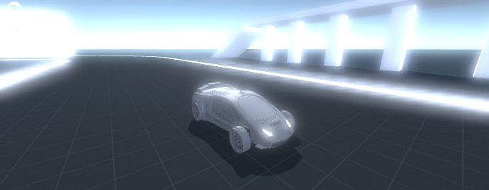
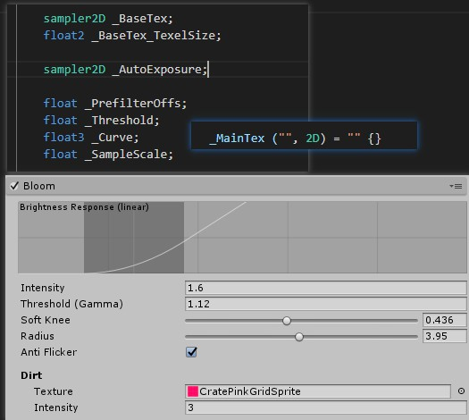

主要是对于高亮部分进行模糊操作
下面来学习关于unity 中的描述


具体操作界面

可以看到 在shade 开始是传入3个纹理
_MainTex ("", 2D) = "" {}
_BaseTex ("", 2D) = "" {}
_AutoExposure ("", 2D) = "" {}
用到了一个函数
o.uvMain = UnityStereoScreenSpaceUVAdjust(v.texcoord.xy, _MainTex_ST);
宏定义中 之类有两个返回，根据上下文这里采用的是返回float2
#define UnityStereoScreenSpaceUVAdjust(x, y) UnityStereoScreenSpaceUVAdjustInternal(x, y)
inline float2 UnityStereoScreenSpaceUVAdjustInternal(float2 uv, float4 scaleAndOffset)
{
return uv.xy * scaleAndOffset.xy + scaleAndOffset.zw;
}
这里是渲染流程后处理阶段， 传入的MainTex 本身应该就是rt
后续通过设置平面坐标系 完成相应的设置，这里是完成顶点部分uv 设置
o. uvMain = UnityStereoScreenSpaceUVAdjust(v. texcoord. xy, _MainTex_ST);
o. uvBase = o. uvMain;
#if UNITY_UV_STARTS_AT_TOP
if (_BaseTex_TexelSize. y < 0. 0)
o.uvBase.y = 1.0 - o.uvBase.y;
#endif
这里解释是 自动曝光，使用顶点阶段计算的uv 采样曝光图 使用r通道， 然后对于图片进行 采样并曝光
代码中找到可以知道其实这部分操作应该是设置的
internal static readonly int _AutoExposure = Shader.PropertyToID("_AutoExposure");
half4 FetchAutoExposed(sampler2D tex, float2 uv)
{
float autoExposure = 1.0;
uv = UnityStereoScreenSpaceUVAdjust(uv, _MainTex_ST);
autoExposure = tex2D(_AutoExposure, uv).r;
return tex2D(tex, uv) * autoExposure;
}
在说明获取采样高亮部分需要知道一些参数
设置高动态安全范围,最高数值是 65504
// Clamp HDR value within a safe range
inline half SafeHDR(half c) { return min(c, HALF_MAX); }
inline half2 SafeHDR(half2 c) { return min(c, HALF_MAX); }
inline half3 SafeHDR(half3 c) { return min(c, HALF_MAX); }
inline half4 SafeHDR(half4 c) { return min(c, HALF_MAX); }
计算三个数值的中间数值
因为是float3类型所以可能会出现不一样的 数据情况，比如[0.2,0.9,0.5]类似这样的数值会拆分从组和
// 3-tap median filter
half3 Median(half3 a, half3 b, half3 c)
{
return a + b + c - min(min(a, b), c) - max(max(a, b), c);
}
对于曝光图采样， 有两种处理方法 一种是防止闪烁
采用5次采样处理方案
#if ANTI_FLICKER
float3 d = _MainTex_TexelSize.xyx * float3(1.0, 1.0, 0.0);
half4 s0 = SafeHDR(FetchAutoExposed(_MainTex, uv));
half3 s1 = SafeHDR(FetchAutoExposed(_MainTex, uv - d.xz).rgb);
half3 s2 = SafeHDR(FetchAutoExposed(_MainTex, uv + d.xz).rgb);
half3 s3 = SafeHDR(FetchAutoExposed(_MainTex, uv - d.zy).rgb);
half3 s4 = SafeHDR(FetchAutoExposed(_MainTex, uv + d.zy).rgb);
half3 m = Median(Median(s0.rgb, s1, s2), s3, s4);
#else
half4 s0 = SafeHDR(FetchAutoExposed(_MainTex, uv));
half3 m = s0.rgb;
#endif
设计到色彩空间转换使用的是unity的底部操作
inline half3 GammaToLinearSpace (half3 sRGB)
{
// Approximate version from http://chilliant.blogspot.com.au/2012/08/srgb-approximations-for-hlsl.html?m=1
return sRGB * (sRGB * (sRGB * 0.305306011h + 0.682171111h) + 0.012522878h);
// Precise version, useful for debugging.
//return half3(GammaToLinearSpaceExact(sRGB.r), GammaToLinearSpaceExact(sRGB.g), GammaToLinearSpaceExact(sRGB.b));
}
inline half3 LinearToGammaSpace (half3 linRGB)
{
linRGB = max(linRGB, half3(0.h, 0.h, 0.h));
// An almost-perfect approximation from http://chilliant.blogspot.com.au/2012/08/srgb-approximations-for-hlsl.html?m=1
return max(1.055h * pow(linRGB, 0.416666667h) - 0.055h, 0.h);
// Exact version, useful for debugging.
//return half3(LinearToGammaSpaceExact(linRGB.r), LinearToGammaSpaceExact(linRGB.g), LinearToGammaSpaceExact(linRGB.b));
}
亮度提取函数
// Brightness function
half Brightness(half3 c)
{
return Max3(c);
}
max3 定义取出颜色的最大定义在common中有定义
inline half Max3(half3 x) { return max(x.x, max(x.y, x.z)); }
inline half Max3(half x, half y, half z) { return max(x, max(y, z)); }
到这里可以把亮度像素过滤函数加回来
half4 FragPrefilter(VaryingsDefault i) : SV_Target
{
float2 uv = i.uv + _MainTex_TexelSize.xy * _PrefilterOffs;
#if ANTI_FLICKER
float3 d = _MainTex_TexelSize.xyx * float3(1.0, 1.0, 0.0);
half4 s0 = SafeHDR(FetchAutoExposed(_MainTex, uv));
half3 s1 = SafeHDR(FetchAutoExposed(_MainTex, uv - d.xz).rgb);
half3 s2 = SafeHDR(FetchAutoExposed(_MainTex, uv + d.xz).rgb);
half3 s3 = SafeHDR(FetchAutoExposed(_MainTex, uv - d.zy).rgb);
half3 s4 = SafeHDR(FetchAutoExposed(_MainTex, uv + d.zy).rgb);
half3 m = Median(Median(s0.rgb, s1, s2), s3, s4);
#else
half4 s0 = SafeHDR(FetchAutoExposed(_MainTex, uv));
half3 m = s0.rgb;
#endif
// 取出图进行曝光处理
#if UNITY_COLORSPACE_GAMMA
m = GammaToLinearSpace(m);
#endif
/// 根据引擎设置确定转到线性空间处理
// Pixel brightness
half br = Brightness(m);
/// 取得像素的最大亮度
// Under-threshold part: quadratic curve
half rq = clamp(br - _Curve.x, 0.0, _Curve.y);
rq = _Curve.z * rq * rq;
// Combine and apply the brightness response curve.
m *= max(rq, br - _Threshold) / max(br, 1e-5);
return EncodeHDR(m);
}
关于curve 传入 和这里有关系

其实通过显示曲线世可以看出来的，本身亮度减去阈值，同时限制在 亮度的两边中最后， 两倍后 、
最后吧亮度曲线*颜色
如果高动态编码成rgbm 如果世底动态实际输出
half4 EncodeHDR(float3 rgb)
{
#if USE_RGBM
rgb *= 1.0 / 8.0;
float m = max(max(rgb.r, rgb.g), max(rgb.b, 1e-6));
m = ceil(m * 255.0) / 255.0;
return half4(rgb / m, m);
#else
return half4(rgb, 0.0);
#endif
}
float3 DecodeHDR(half4 rgba)
{
#if USE_RGBM
return rgba.rgb * rgba.a * 8.0;
#else
return rgba.rgb;
#endif
}
在我自己库中有单独说 但是这里是关于hdr问题 HDR文件格式简介 - CSDN博客---rgbe格式rgb格式转换----
rgbm
可以看到选择范围是不同的这里使用的是 6
rgbm
使用的函数
half4 FragDownsample1(VaryingsDefault i) : SV_Target
{
#if ANTI_FLICKER
return EncodeHDR(DownsampleAntiFlickerFilter(_MainTex, i.uvSPR, _MainTex_TexelSize.xy));
#else
return EncodeHDR(DownsampleFilter(_MainTex, i.uvSPR, _MainTex_TexelSize.xy));
#endif
}
使用到的是box采样，注意采样4次
浅陌文章
关于这部分还是不是很清楚 ，但是进行一次模糊
// Downsample with a 4x4 box filter
half3 DownsampleFilter(sampler2D tex, float2 uv, float2 texelSize)
{
float4 d = texelSize.xyxy * float4(-1.0, -1.0, 1.0, 1.0);
half3 s;
s = DecodeHDR(tex2D(tex, uv + d.xy));
s += DecodeHDR(tex2D(tex, uv + d.zy));
s += DecodeHDR(tex2D(tex, uv + d.xw));
s += DecodeHDR(tex2D(tex, uv + d.zw));
return s * (1.0 / 4.0);
}
这里可以进行两次
half4 FragDownsample2(VaryingsDefault i) : SV_Target
{
return EncodeHDR(DownsampleFilter(_MainTex, i.uvSPR, _MainTex_TexelSize.xy));
}
最后一次是基础+ 模糊进行合并
half4 FragUpsample(VaryingsMultitex i) : SV_Target
{
half3 base = DecodeHDR(tex2D(_BaseTex, i.uvBase));
half3 blur = UpsampleFilter(_MainTex, i.uvMain, _MainTex_TexelSize.xy, _SampleScale);
return EncodeHDR(base + blur);
}
half3 UpsampleFilter(sampler2D tex, float2 uv, float2 texelSize, float sampleScale)
{
#if MOBILE_OR_CONSOLE
// 4-tap bilinear upsampler
float4 d = texelSize.xyxy * float4(-1.0, -1.0, 1.0, 1.0) * (sampleScale * 0.5);
half3 s;
s = DecodeHDR(tex2D(tex, uv + d.xy));
s += DecodeHDR(tex2D(tex, uv + d.zy));
s += DecodeHDR(tex2D(tex, uv + d.xw));
s += DecodeHDR(tex2D(tex, uv + d.zw));
return s * (1.0 / 4.0);
#else
// 9-tap bilinear upsampler (tent filter)
float4 d = texelSize.xyxy * float4(1.0, 1.0, -1.0, 0.0) * sampleScale;
half3 s;
s = DecodeHDR(tex2D(tex, uv - d.xy));
s += DecodeHDR(tex2D(tex, uv - d.wy)) * 2.0;
s += DecodeHDR(tex2D(tex, uv - d.zy));
s += DecodeHDR(tex2D(tex, uv + d.zw)) * 2.0;
s += DecodeHDR(tex2D(tex, uv)) * 4.0;
s += DecodeHDR(tex2D(tex, uv + d.xw)) * 2.0;
s += DecodeHDR(tex2D(tex, uv + d.zy));
s += DecodeHDR(tex2D(tex, uv + d.wy)) * 2.0;
s += DecodeHDR(tex2D(tex, uv + d.xy));
return s * (1.0 / 16.0);
#endif
}
统一使用的vs顶点函数
这里使用了完整的uv 顶点阶段shader，这里理解是模型变换的标准坐标中，所以这里可以使用顶点loacluv当作屏幕空间uv
VaryingsDefault VertDefault(AttributesDefault v)
{
VaryingsDefault o;
o.pos = UnityObjectToClipPos(v.vertex);
o.uv = v.texcoord.xy;
o.uvSPR = UnityStereoScreenSpaceUVAdjust(v.texcoord.xy, _MainTex_ST);
return o;
}
具体引用过程， get亮度 进行两次降采样，每次都是用box过滤 完成4x4模糊最后合并
ZTest Always Cull Off ZWrite Off
Pass
{
CGPROGRAM
#pragma multi_compile __ ANTI_FLICKER
#pragma multi_compile __ UNITY_COLORSPACE_GAMMA
#pragma vertex VertDefault
#pragma fragment FragPrefilter
ENDCG
}
Pass
{
CGPROGRAM
#pragma multi_compile __ ANTI_FLICKER
#pragma vertex VertDefault
#pragma fragment FragDownsample1
ENDCG
}
Pass
{
CGPROGRAM
#pragma vertex VertDefault
#pragma fragment FragDownsample2
ENDCG
}
Pass
{
CGPROGRAM
#pragma vertex VertMultitex
#pragma fragment FragUpsample
ENDCG
}
主要说的就是shader中的程序是如何和界面操作关联的

_MainTex
sampler2D _BaseTex;
float2 _BaseTex_TexelSize;
sampler2D _AutoExposure;
float _PrefilterOffs;
float _Threshold;
float3 _Curve;
float _SampleScale;
在BloomComponent中有相关的定义
在get 出来第一个类中可以看到相关的设置get
static class Uniforms
{
internal static readonly int _AutoExposure = Shader.PropertyToID("_AutoExposure");
internal static readonly int _Threshold = Shader.PropertyToID("_Threshold");
internal static readonly int _Curve = Shader.PropertyToID("_Curve");
internal static readonly int _PrefilterOffs = Shader.PropertyToID("_PrefilterOffs");
internal static readonly int _SampleScale = Shader.PropertyToID("_SampleScale");
internal static readonly int _BaseTex = Shader.PropertyToID("_BaseTex");
internal static readonly int _BloomTex = Shader.PropertyToID("_BloomTex");
internal static readonly int _Bloom_Settings = Shader.PropertyToID("_Bloom_Settings");
internal static readonly int _Bloom_DirtTex = Shader.PropertyToID("_Bloom_DirtTex");
internal static readonly int _Bloom_DirtIntensity = Shader.PropertyToID("_Bloom_DirtIntensity");
}
里面有关于 _AutoExposure _Threshold _Curve _PrefilterOffs _BaseTex 设置
在预处理函数开头就实例化了ui 和 get了材质相关函数
var bloom = model.settings.bloom;
var lensDirt = model.settings.lensDirt;
var material = context.materialFactory.Get("Hidden/Post FX/Bloom");
material.shaderKeywords = null;
mode 定义
public abstract class PostProcessingComponent<T> : PostProcessingComponentBase
where T : PostProcessingModel
{
public T model { get; internal set; }
public virtual void Init(PostProcessingContext pcontext, T pmodel)
{
context = pcontext;
model = pmodel;
}
public override PostProcessingModel GetModel()
{
return model;
}
}
settings 这里是调用了独立的结构处理
public struct Settings
{
public BloomSettings bloom;
public LensDirtSettings lensDirt;
public static Settings defaultSettings
{
get
{
return new Settings
{
bloom = BloomSettings.defaultSettings,
lensDirt = LensDirtSettings.defaultSettings
};
}
}
}
关于 bloom setinging 和 LensDirtSettings 是 对应的是unity 后处理一个可视化模块就是上面截图那样
两个模块都进行了序列操作 这里就是界面了
public class BloomModel : PostProcessingModel
{
[Serializable]
public struct BloomSettings
{
[Min(0f), Tooltip("Strength of the bloom filter.")]
public float intensity;
[Min(0f), Tooltip("Filters out pixels under this level of brightness.")]
public float threshold;
public float thresholdLinear
{
set { threshold = Mathf.LinearToGammaSpace(value); }
get { return Mathf.GammaToLinearSpace(threshold); }
}
[Range(0f, 1f), Tooltip("Makes transition between under/over-threshold gradual (0 = hard threshold, 1 = soft threshold).")]
public float softKnee;
[Range(1f, 7f), Tooltip("Changes extent of veiling effects in a screen resolution-independent fashion.")]
public float radius;
[Tooltip("Reduces flashing noise with an additional filter.")]
public bool antiFlicker;
public static BloomSettings defaultSettings
{
get
{
return new BloomSettings
{
intensity = 0.5f,
threshold = 1.1f,
softKnee = 0.5f,
radius = 4f,
antiFlicker = false,
};
}
}
}
[Serializable]
public struct LensDirtSettings
{
[Tooltip("Dirtiness texture to add smudges or dust to the lens.")]
public Texture texture;
[Min(0f), Tooltip("Amount of lens dirtiness.")]
public float intensity;
public static LensDirtSettings defaultSettings
{
get
{
return new LensDirtSettings
{
texture = null,
intensity = 3f
};
}
}
}
设置第一个纹理自动曝光 是上面预处理函数传递过来的
material.SetTexture(Uniforms._AutoExposure, autooExposure);
public void Prepare(RenderTexture source, Material uberMaterial, Texture autoExposure)
关于与该类调用在 UnityEngine.PostProcessing中有说明
如果激活就会执行该函数传递进去的是一张白色图,通过下面就找到了来源
Texture autoExposure = GraphicsUtils.whiteTexture;
if (m_EyeAdaptation.active)
{
uberActive = true;
autoExposure = m_EyeAdaptation.Prepare(src, uberMaterial);
}
uberMaterial.SetTexture("_AutoExposure", autoExposure);
if (m_Bloom.active)
{
uberActive = true;
m_Bloom.Prepare(src, uberMaterial, autoExposure);
}
关于 GraphicsUnitls 也是引擎基础后处理
默认还是创建一张白图
public static Texture2D whiteTexture
{
get
{
if (s_WhiteTexture != null)
return s_WhiteTexture;
s_WhiteTexture = new Texture2D(1, 1, TextureFormat.ARGB32, false);
s_WhiteTexture.SetPixel(0, 0, new Color(1f, 1f, 1f, 1f));
s_WhiteTexture.Apply();
return s_WhiteTexture;
}
}
在bloomshader关于高动态处理 在手机上不应用 在这里有定义
// TODO: Extend the use of RGBM to the whole chain for mobile platforms
var useRGBM = Application.isMobilePlatform;
var rtFormat = useRGBM
? RenderTextureFormat.Default
: RenderTextureFormat.DefaultHDR;
采样rt 进行缩放
// Do bloom on a half-res buffer, full-res doesn't bring much and kills performances on
// fillrate limited platforms
var tw = context.width / 2;
var th = context.height / 2;
关于阈值的设置
在对应结构中可以看到 get { return Mathf.GammaToLinearSpace(threshold); } 进行了一个现在转换操作
// Uupdate the shader properties
float lthresh = bloom.thresholdLinear;
material.SetFloat(Uniforms._Threshold, lthresh);
关于curve设置在shader最后有使用这里是使用了一个曲线
float knee = lthresh * bloom.softKnee + 1e-5f;
var curve = new Vector3(lthresh - knee, knee * 2f, 0.25f / knee);
material.SetVector(Uniforms._Curve, curve);
偏移值设置
material.SetFloat(Uniforms._PrefilterOffs, bloom.antiFlicker ? -0.5f : 0f);
采样缩放
通过定义可以知道bloom 半径总是小于8
var tw = context.width / 2;
var th = context.height / 2;
float logh = Mathf.Log(th, 2f) + bloom.radius - 8f;
int logh_i = (int)logh;
float sampleScale = 0.5f + logh - logh_i;
material.SetFloat(Uniforms._SampleScale, sampleScale);
// 其实就是视口长和宽了
public int width
{
get { return camera.pixelWidth; }
}
public int height
{
get { return camera.pixelHeight; }
}
get 设置rt
// Prefilter pass
var prefiltered = context.renderTextureFactory.Get(tw, th, 0, rtFormat);
Graphics.Blit(source, prefiltered, material, 0);
到这里只是对整个流程做了一个初步的认识，关于到底是怎么处理关系还需要 进一步研究实现